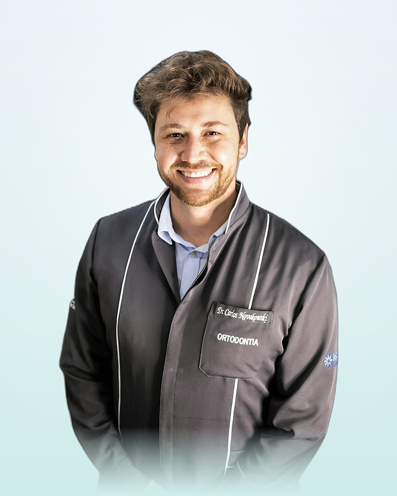

İmplant nedir?
Dental implant; kaybedilen dişin kökü yerine çene kemiğine yerleştirilen, çoğunlukla titanyum veya titanyum alaşımından üretilen vida biçimli yapay köktür. Kemik, implant yüzeyiyle biyolojik olarak kaynaşır; bu sürece osseointegrasyon denir. İyileşme tamamlandığında implant üzerine tek kuron, köprü ya da tüm çeneyi kapsayan protez uygulanır.
Geleneksel köprülerden farkı, komşu sağlıklı dişlerin kesilmesine gerek bırakmaması ve kemiğe çiğneme yükü ileterek kemik erimesini yavaşlatmasıdır. Metal alerjisi gibi özel durumlarda zirkonya (seramik) implant seçenekleri değerlendirilebilir.
Kimlere uygulanabilir?
Genel sağlık durumu cerrahiye uygun, çene gelişimini tamamlamış (genellikle 18 yaş üstü) ve yeterli kemik hacmine sahip bireylerde uygulanabilir. Kemik hacmi yetersizse kemik grefti veya sinüs lifting ile hazırlık gerekebilir.
Hekiminizin dikkatle değerlendireceği durumlar
- Kontrolsüz diyabet: İyileşmeyi geciktirebilir; kan şekeri kontrolü ve dahiliye görüşü istenebilir.
- Sigara kullanımı: İmplant kaybı riskini artırır; en azından operasyon öncesi ve sonrası bırakılması önerilir.
- Bifosfonat / antirezorptif ilaç kullanımı: Çene kemiği iyileşmesini etkileyebileceğinden reçeteleyen hekimle birlikte karar verilir.
- Baş-boyun bölgesine radyoterapi öyküsü ve tedavi edilmemiş diş eti hastalığı.
Tedavi aşamaları
- 1
Muayene ve 3D planlama
Klinik muayene ve gerekli görüntüleme. Kemik hacmi değerlendirilir; seçenekler, süre ve ücret bilgisi yazılı olarak paylaşılır.
- 2
İmplantın yerleştirilmesi
Lokal anestezi (gerekirse sedasyon) altında implant kemiğe yerleştirilir. Uygun vakalarda aynı seansta geçici diş takılabilir.
- 3
İyileşme (osseointegrasyon)
Kemik implantla kaynaşır. Bu dönemde geçici protezle günlük yaşama devam edilir; 1. hafta ve 1. ay kontrolleri yapılır.
- 4
Ölçü ve kalıcı protez
Ölçü alınır; kuron, köprü veya hibrit protez laboratuvarda üretilir, prova ile uyumu kontrol edilerek takılır.
- 5
Kontrol ve bakım
6 ayda bir kontrol ve profesyonel temizlik; implant çevresi diş eti sağlığı düzenli olarak izlenir.
All-on-4 / All-on-6
Tüm dişlerini kaybetmiş ya da kaybetmek üzere olan hastalarda, bir çeneye yerleştirilen 4 veya 6 implant üzerine sabit tam protez uygulanmasıdır. Arka implantların açılı yerleştirilmesi sayesinde çoğu vakada kemik grefti ihtiyacı azalır.
All-on-4
- Bir çenede 4 implant
- Sınırlı kemik hacminde açılı yerleşim
- Uygun vakalarda aynı gün geçici sabit protez
- Daha kısa cerrahi süre
All-on-6
- Bir çenede 6 implant
- Yükün daha fazla noktaya dağılması
- Yeterli kemik hacmi gerektirir
- Yüksek çiğneme kuvveti olan hastalarda tercih edilebilir
Hangi seçeneğin uygun olduğu; kemik hacmi, karşıt çenenin durumu ve çiğneme kuvvetleri değerlendirilerek hekiminiz tarafından belirlenir.
Aynı gün implant (immediat yükleme)
İmplant yerleştirildiği gün üzerine geçici sabit dişin takılmasıdır. Bunun için implantın kemikte yeterli primer stabilite sağlaması ve hastanın çiğneme alışkanlıklarının uygun olması gerekir. Kalıcı protez, iyileşme tamamlandıktan sonra uygulanır.
Riskler ve olası komplikasyonlar
Dental implant, literatürde uzun dönem sağkalım oranları yüksek raporlanan bir tedavidir; ancak her cerrahi işlem gibi riskleri vardır. Bilgilendirilmiş onam sürecinde aşağıdaki başlıklar sizinle ayrıntılı olarak konuşulur:
- Enfeksiyon ve gecikmiş iyileşme (özellikle sigara ve kontrolsüz sistemik hastalıklarda).
- İmplantın kemikle kaynaşmaması; bu durumda implant çıkarılır ve iyileşme sonrası yeniden planlama yapılabilir.
- Sinir yaralanması (alt çenede geçici veya nadiren kalıcı uyuşukluk) ve sinüs perforasyonu (üst çene arka bölge).
- Peri-implantitis: İmplant çevresi diş eti ve kemik iltihabı; düzenli bakımla riski azaltılır.
- Protez bileşenlerinde gevşeme veya kırılma gibi mekanik sorunlar.
Literatürde 10 yıllık implant sağkalım oranları yüksek olsa da sonuç; kemik kalitesi, ağız hijyeni, sigara kullanımı ve genel sağlık gibi kişisel etkenlere bağlıdır. Tedavi sonuçları kişiden kişiye farklılık gösterir.
İyileşme süreci ve bakım
- İlk 24 saat: Soğuk kompres, yumuşak ve ılık gıdalar; operasyon bölgesine tükürmeme ve çalkalamama.
- İlk hafta: Reçete edilen ilaçların düzenli kullanımı; dikişler ve bölge 7–10. günde kontrol edilir.
- Sigara ve alkol: İyileşme dönemi boyunca kaçınılması önerilir.
- Uzun dönem: Günde iki kez fırçalama, arayüz fırçası / diş ipi ve 6 ayda bir kontrol ile implant çevresi sağlığı korunur.
Sık sorulan sorular
İşlem lokal anestezi altında yapılır. Sonraki günlerde ağrı ve şişlik görülebilir; hekiminizin önerileri doğrultusunda takip edilir.
Düzenli bakım ve kontrolle implantlar uzun süre kullanılabilir; süre kişiye göre değişir. Ömür; ağız hijyeni, sigara, genel sağlık ve kemik kalitesine bağlıdır. Üzerindeki protez bileşenleri zamanla yenilenebilir.
Kan şekeri kontrol altındaysa çoğunlukla uygulanabilir. Kontrolsüz diyabet iyileşmeyi geciktirebileceğinden hekiminiz dahiliye görüşü ve HbA1c değerlendirmesi isteyebilir.
İlk 24 saat soğuk ve yumuşak gıdalar önerilir; ilk hafta çiğneme bölgesine yük bindirilmez. Kalıcı protez takıldıktan sonra normal beslenmeye dönülür.

Kaynaklar
- Howe MS, Keys W, Richards D. Long-term (10-year) dental implant survival: A systematic review and sensitivity meta-analysis. J Dent. 2019;84:9-21.
- Moraschini V, et al. Evaluation of survival and success rates of dental implants reported in longitudinal studies with a follow-up period of at least 10 years: a systematic review. Int J Oral Maxillofac Surg. 2015;44(3):377-388.
- Türk Dişhekimleri Birliği. Hasta bilgilendirme kılavuzları: Dental implant uygulamaları.